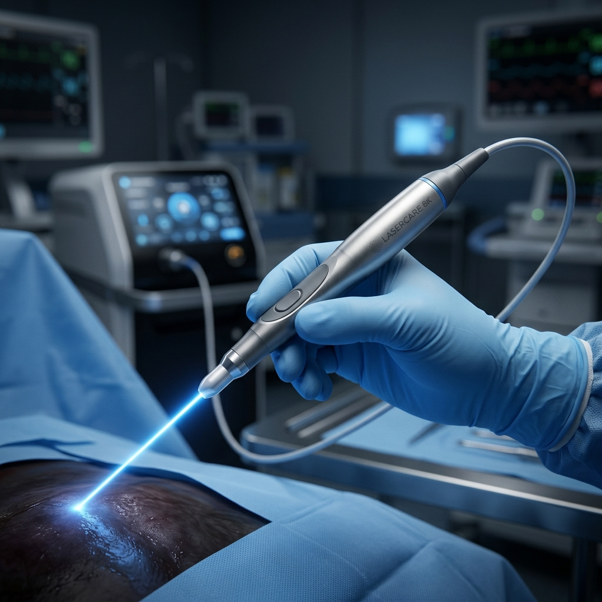

Preferido
Láser de Diodo
Fotocoagulación controlada para hemorroides y quistes pilonidales. Sella el tejido sin necesidad de cortes externos o suturas dolorosas.
- • Recuperación en 24-48 horas
- • Sin sangrado significativo
- • Procedimiento ambulatorio